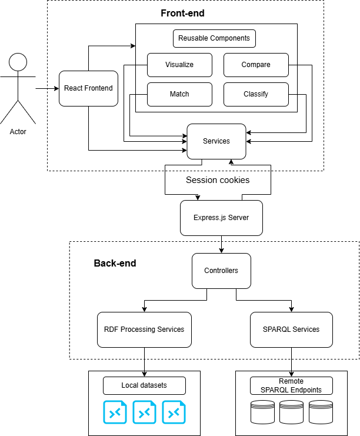
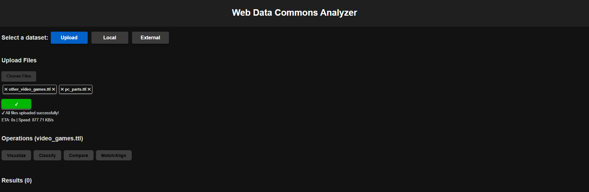
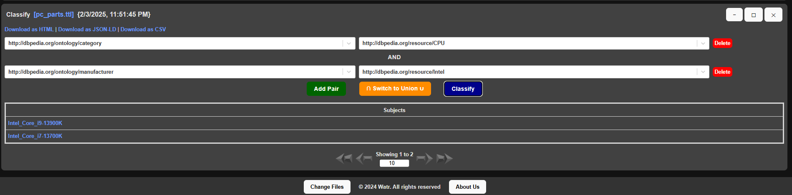
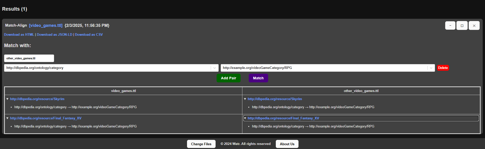

This paper details the conceptualization and realization of a service-oriented web application designed to process and analyze structured metadata encoded in RDFa and HTML5 microdata formats. The system accommodates user-provided datasets and performs various operations such as visualization, classification, comparison, and matching/alignment of metadata. By leveraging a modular approach, the application ensures scalability and flexibility in handling diverse data sources.
The rapid growth of the web has led to an explosion of data available online. However, much of this data is unstructured and difficult to process automatically. To address this challenge, web semantics and structured data formats such as RDFa and HTML5 microdata have been developed. These formats enable the embedding of rich metadata within web pages, making it easier for machines to understand and process the information.
The Web Data Commons Analyzer (watr) is a microservice-based web system designed to address this need. By leveraging a modular approach, watr implements a set of useful operations to visualize, classify, compare, and match/align metadata. The system performs queries by invoking a SPARQL endpoint, with results available in both HTML and JSON-LD formats. Additionally, various statistics modeled with the RDF Data Cube vocabulary are exposed, providing valuable insights into the data.
This technical report provides a comprehensive overview of the watr system, including its internal data structures, API technical aspects, RDF-based knowledge models, and the pragmatic use of external data sources. The report also includes a user guide with case studies to demonstrate the system's capabilities and practical applications.
The primary objective of the Web Data Commons Analyzer (watr) is to provide a robust and efficient platform for processing and analyzing structured metadata available in RDFa and HTML5 microdata formats. The system aims to achieve specific objectives.
Firstly, the project enables the acquisition of metadata from various sources, including remote SPARQL endpoints and local RDF files in multiple formats such as JSON-LD, RDF/XML, Turtle, and TriX. This data is then conveniently handled using SPARQL queries and N3 parsers to extract, transform, and load (ETL) relevant information for further analysis.
Secondly, watr provides tools for visualizing the metadata in a user-friendly manner, allowing users to gain insights into the data through graphical representations. Furthermore, the system implements mechanisms for classifying the metadata based on predefined criteria, enabling users to categorize and organize the data effectively.
Data can also be compared using watr, identifying similarities and differences to support data-driven decision-making. The system offers functionalities for matching metadata from different sources, ensuring data consistency and interoperability. Additionally, various statistics modeled with the RDF Data Cube vocabulary are exposed, providing valuable insights.
By achieving these objectives, watr aims to become a comprehensive tool for researchers, data scientists, and developers working with structured metadata. The system enables users to efficiently process, analyze, and derive meaningful insights from the data, supporting advanced data analysis and decision-making.
The project is comprised of several key components, including the backend, frontend, uploads folder, and data module. Each component plays a crucial role in the overall functionality of the system, enabling users to interact with the data and perform various operations.
The backend of the watr system is built using Node.js and Express.js, providing a robust and scalable platform for handling HTTP requests and performing various data processing tasks. The backend is responsible for querying SPARQL endpoints, processing RDF data, and exposing RESTful APIs for the frontend to interact with. Key technologies and packages used in the backend include Express.js, a minimal and flexible Node.js web application framework that provides a robust set of features for web and mobile applications; SPARQL.js, a library for parsing and executing SPARQL queries; RDFLib, a library for working with RDF data in JavaScript; JsonLD, a library for working with JSON-LD data; rdfxml-streaming-parser, a library for parsing RDF/XML data; and rdf-validate-shacl, a library for validating RDF data against SHACL shapes.
The backend is structured into several modules, including services, controllers, routes, and utilities. The services module contains the core logic for querying SPARQL endpoints and processing RDF data. The controllers module defines the endpoints and handles incoming HTTP requests. The routes module sets up the routes for the various endpoints. The utilities module provides utility functions for data conversion and manipulation.
The frontend of the watr system is built using modern web technologies to provide a user-friendly interface for interacting with the backend services. The frontend is responsible for displaying the data, visualizing the metadata, and providing tools for classification, comparison, and matching. Key technologies used in the frontend include HTML5, the standard markup language for creating web pages; CSS3, a style sheet language used for describing the presentation of a document written in HTML; JavaScript, a programming language that enables interactive web pages; Vite, a build tool that provides a fast development environment and optimized production builds; and Tailwind CSS, a utility-first CSS framework for rapidly building custom user interfaces.
The frontend is a single-page application, structured into several components, including panels, components, assets, and services. The functionalities are modeled by the Operations components such as Classify, Compare, MatchAlign and Visualize. The components module includes reusable UI components such as headers, footers, and data tables. The assets module contains static assets such as images and stylesheets. The services module provides functions for making API calls to the backend. The frontend communicates with the backend through RESTful APIs, allowing users to perform various operations such as querying data, visualizing metadata, and comparing datasets. The config contains the urls.json with predefined remote datasets and queries.
The watr system includes an uploads folder that contains RDF files in different formats. This folder is used to store user-provided datasets that can be processed and analyzed by the system. Examples of RDF formats supported include JSON-LD, RDF/XML, Turtle, and TriX. These files can be uploaded to the system and then queried using SPARQL, allowing users to extract, transform, and load (ETL) relevant information for further analysis. The uploads folder plays a crucial role in enabling the system to handle diverse data sources and formats, ensuring flexibility and extensibility in data processing.
The watr system supports the acquisition of metadata from various sources, including remote SPARQL endpoints and local RDF files in multiple formats such as JSON-LD, RDF/XML, Turtle, and TriX. The data is processed using SPARQL queries and N3 parsers to extract, transform, and load (ETL) relevant information for further analysis. Between the back-end and front-end of the application, the data is modeled in various shapes in order to better suite the action performed. The local data files are firstly parsed using the n3 and RdfXmlParser JavaScript packages, depending on their format.
{
subject: string,
predicate: string,
object: string
}
{ // Data sent
file: string, // the dataset
operation: string, // the operation, Union/Intersection
pairs: [
{
predicate: string, // the predicate to filter by
attribute: string // the attribute to filter by
}
]
}
{ // Data received
subjects: string[] // the subjects that match the filter
}
{ // Data sent
file: string, // the first dataset
otherFile: string, // the second dataset
pairs: [
{
predicate: string, // the predicate to filter subjects by
attribute: string // the predicate to filter subjects by
}
]
}
{ // Data received
matched: [
{
subject1: string, // the subject in the first dataset
subject2: string // the subject in the second dataset
}
],
aligned: [
{
subject1: string, // the subject in the first dataset
subject2: string // the subject in the second dataset
}
]
}
The operations' services use various SPARQL queries to extract data from the selected datasets. For example, in the case of visualization, the query is as it follows, where limit is the results count.
PREFIX dbo:
SELECT ?subject ?predicate ?object
WHERE {
?subject ?predicate ?object.
} LIMIT ${limit}
Meanwhile, in the case of match, the query is more complex as it follows, where the pairs are the filters.
SELECT DISTINCT ?subject ?predicate ?object
WHERE {
?subject ?predicate ?object.
${filterClauses}
}
// filterClauses
FILTER (?predicate = <${predicate}> && ?object = ${formatAttribute(attribute)})
The watr system is designed using a service oriented architecture (SOA), with separate components for the backend, frontend, uploads folder, and data module. This modular approach enables the system to be scalable, flexible, and extensible, allowing users to interact with the data and perform various operations efficiently.
The front-end is developed in the React framework, ensuring modularization and reusability of components. The back-end is developed in NodeJS, using ExpressJS for handling HTTP requests and SPARQL queries. The system is designed to be highly responsive and user-friendly, providing a seamless experience for users interacting with the data.
The communication of data between the integrated ends of the application is performed through a REST paradigm consisting of API endpoints. The data is sent in JSON format, ensuring compatibility and ease of processing between the front-end and back-end components. The system is designed to be highly scalable, allowing users to process and analyze large datasets efficiently. The security of the system is ensured by expiring cookies with signature verification and encryption for file access.
The frontend of the watr system is designed using the React framework, making use creatively a modular and reusable architecture for building user interfaces. The frontend consists of several components, including panels, components, assets, and services, each serving a specific purpose in the system. The frontend communicates with the backend through RESTful APIs, enabling users to interact with the data and perform various operations such as querying data, visualizing metadata, and comparing datasets. Regarding code quality, the HTML is validated by the React framework, while the CSS is validated by the Tailwind CSS framework. There is also a custom 404 page in case of errors.
The upload files component allows users to upload RDF files in various formats, including JSON-LD, RDF/XML, Turtle, and TriX. The component provides a user-friendly interface for selecting and uploading files, with progress indicators and error handling. The uploaded files are stored in the uploads folder, where they can be processed and analyzed by the system, not before validating the RDF data against SHACL shapes.
The visualize component is responsible for displaying the data in a user-friendly manner, allowing users to gain insights into the data through graphical representations. The data is displayed in a tabular format, with each triple of subject-predicate-object represented in a row. The component provides tools for filtering and sorting the data, enabling users to interact with the data effectively, allowing as well pagination.

The classify component enables users to categorize and organize the data effectively, providing tools for filtering and grouping the data based on predefined criteria. The component allows users to define custom filters and attributes for classifying the data either by a union or a intersection of the predicate-attribute pairs, enabling them to organize the data into meaningful categories. The data is displayed in a tabular format, with each subject represented in a row, allowing users to interact with the data effectively.
The compare component enables users to identify similarities and differences between datasets, providing tools for filtering and sorting the data based on predefined criteria. The component allows users switch between comparing by multiple predicates or by subjects.

Finally, the match component enables users to match metadata from different sources, ensuring data consistency and interoperability. The component provides tools for filtering and sorting the data based on predefined criteria, allowing users to identify matching subjects between datasets. The data is similarly displayed in a tabular format.
The backend of the watr system is designed using Node.js and Express.js, providing a robust and scalable platform for handling HTTP requests and performing various data processing tasks, being is responsible for querying SPARQL endpoints, processing RDF data, and exposing RESTful APIs for the frontend to interact with. The backend is structured into several modules, including services, controllers, routes, and utilities, each serving a specific purpose in the system. The backend uses SPARQL.js, RDFLib, JsonLD, rdfxml-streaming-parser, and rdf-validate-shacl libraries for working with RDF data in JavaScript, ensuring compatibility and ease of processing between the front-end and back-end components.
The watr system is deployed on the Google Cloud Platform (GCP), ensuring high availability and scalability for users. More specifically, the system is deployed on a compute engine instance running Linux, hosted at this URL.
Inside the watr application, the user can perform various operations on the data, such as visualizing, classifying, comparing, and matching metadata. Apart from the ones presented above in the Frontend architecture section, the user can as well execute SPARQL queries on external data. The user will select a remote dataset, a predefined query, while the results are available in different formats as downloaded files.:

If we talk about the Linked Data Principles, the watr system is designed to adhere to this set of practices coined by Tim Berners-Lee. In the display of the data, things and concepts are identified by URIs, while the data is linked to other data. The data can also be exported in different formats, such as JSON-LD, HTML and CSV on any operation available in the application. For exmample, the following data will be exported to the JSON snippet below:
We have extensively tested the system and addressed most of the issues identified during development.
From varying dataset sizes and sources to different SPARQL queries, naming conventions, and more, all while remaining largely bug-free.
However, a few challenges remain:
Several enhancements are planned to improve functionality and user experience:
Libraries and Frameworks:
Tools and Services:
Academic Institutions / Professors: